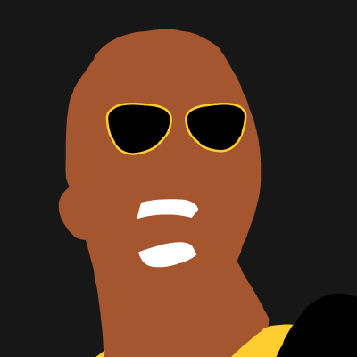
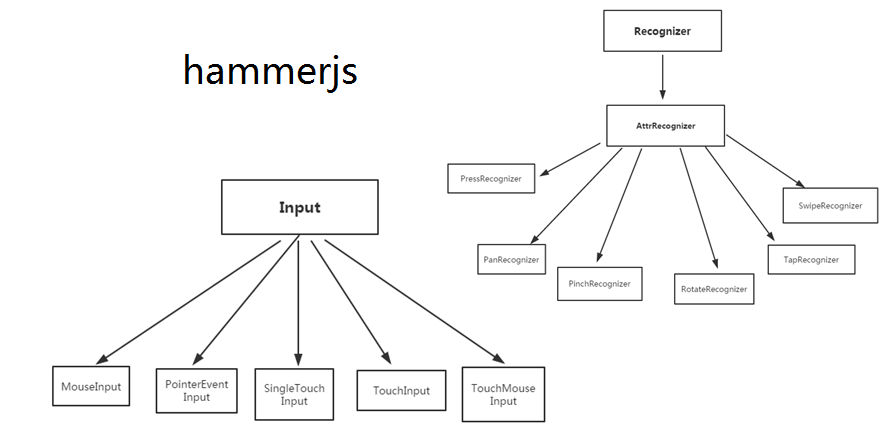

HammerJS
Увод
HammerJS е JavaScript библиотека с отворен код,
която може да разпознава
жестове, направени от touch,
mouse и
pointerEvents.
Интересен факт е, че HammerJS и всички свързани с нея библиотеки, са разработени изцяло
от доброволци: Alexander Schmitz (ръководител на проекта),
Chris Thoburn, Jorik Tangelder (създател).
Начин на използване
Използването на HammerJS е много лесно, единтсвеното, което трябва да се направи, е да се добави библиотеката и да се направи нова текуща инстанция.
var hammertime = new Hammer(myElement, myOptions);
hammertime.on('pan', function(ev) {
console.log(ev);
});
По подразбиране HammerJS добавя набор от
tap,
doubletap,
press,
horizontal
pan
и swipe, и the
multi-touch pinch и
rotate
"разпознаватели на жестове". За по-кратко ще ги наричаме "функции".
Pinch и
rotate функциите
са неактивни по подразбиране, но можете да ги
активирате, като извикате:
hammertime.get('pinch').set({ enable: true });
hammertime.get('rotate').set({ enable: true });Следват и начините за активиране на вертикално
или във всички посоки
разпознаване на pan и
swipe функциите:
hammertime.get('pan').set({ direction: Hammer.DIRECTION_ALL });
hammertime.get('swipe').set({ direction: Hammer.DIRECTION_VERTICAL });Препоръчва се също така и мета маркера на екранния прозорец, който дава по-голям контрол върху уеб страницата, като деактивира мащабирането. По-новите браузъри, които поддържат свойството touch-action, не изискват това.
<meta name="viewport" content="user-scalable=no, width=device-width, initial-scale=1, maximum-scale=1">Повече възможности
HammerJS ви дава възможност да настроите собствен набор от "разпознаватели" или функции за текущата инстанция, която сте създали. Това естествено изисква малко повече код, но пък за сметка на това, дава повече контрол върху жестовете, които се разпознават.
var mc = new Hammer.Manager(myElement, myOptions);
mc.add(new Hammer.Pan({ direction: Hammer.DIRECTION_ALL, threshold: 0 }));
mc.add(new Hammer.Tap({ event: 'quadrupletap', taps: 4 }));
mc.on("pan", handlePan);
mc.on("quadrupletap", handleTaps);Примерът по-горе, създава екземпляр, съдържащ pan и quadrupletap жест.
Те се изпълняват
в реда, в който са добавени.
Поддръжка от различни браузъри
Не се притеснявайте, ако браузърът ви или операционната система, която използвате не са в списъка, HammerJS може да работи така или иначе! Internet Explorer 8 и по-стари версии не се поддържат от HammerJS.
Браузърите, които имат вградена поддръжка за touch-action, могат да имат подобрено поведение и разпознаване на жестовете, в сравнение с браузърите, които нямат.
| Браузър | Pan | Pinch | Press | Rotate | Swipe | Tap | Multi-user | Touch-action |
|---|---|---|---|---|---|---|---|---|
| Windows Phone 8 - IE10 | ♥ | ♥ | ♥ | ♥ | ♥ | ♥ | ♥ | ♥ |
| Android 2.3 - browser | ♥ | ♥ | ♥ | ♥ | ||||
| Android 2.3 - FireFox | ♥ | ♥ | ♥ | ♥ | ♥ | ♥ | ♥ | |
| Android 4.x - browser | ♥ | ♥ | ♥ | ♥ | ♥ | ♥ | ♥ | |
| Android 4.4 - browser | ♥ | ♥ | ♥ | ♥ | ♥ | ♥ | ♥ | ♥ |
| Android 4 - Chrome | ♥ | ♥ | ♥ | ♥ | ♥ | ♥ | ♥ | ♥ |
| Android 4 - Opera | ♥ | ♥ | ♥ | ♥ | ♥ | ♥ | ♥ | ? |
| Android 4 - FireFox | ♥ | ♥ | ♥ | ♥ | ♥ | ♥ | ♥ | |
| Android 4 w/ mouse | ♥ | ♥ | ♥ | ♥ | ♥ | ♥ | ♥ | n/a |
| iOS 6 | ♥ | ♥ | ♥ | ♥ | ♥ | ♥ | ♥ | |
| iOS 7 | ♥ | ♥ | ♥ | ♥ | ♥ | ♥ | ♥ | |
| iOS 8 | ♥ | ♥ | ♥ | ♥ | ♥ | ♥ | ♥ | |
| BlackBerry 10 | ♥ | ♥ | ♥ | ♥ | ♥ | ♥ | ? | ? |
| FireFox OS (simulator) | ♥ | ♥ | ♥ | ♥ | ♥ | ♥ | ? | ? |
| Desktop - IE11 | ♥ | ♥ | ♥ | ♥ | ♥ | |||
| Desktop - IE10 | ♥ | ♥ | ♥ | ♥ | ♥ | |||
| Desktop - IE9 | ♥ | ♥ | ♥ | ♥ | ||||
| Desktop - Chrome | ♥ | ♥ | ♥ | ♥ | ♥ | |||
| Desktop - Firefox | ♥ | ♥ | ♥ | ♥ | ||||
| Desktop - Opera | ♥ | ♥ | ♥ | ♥ | ? | |||
| Chromebook | ♥ | ♥ | ♥ | ♥ | ♥ | ♥ | ♥ | ? |
| Windows 8 /w pen | ♥ | ♥ | ♥ | ♥ | ♥ | n/a | ||
| Windows 8 /w touch | ♥ | ♥ | ♥ | ♥ | ♥ | ♥ | ♥ | n/a |
| Windows 8 /w mouse | ♥ | ♥ | ♥ | ♥ | ♥ | n/a | ||
| Windows 8 /w mixed | ♥ | ♥ | ♥ | ♥ | ♥ | ♥ | ♥ | n/a |
Touch-действие
Chrome 35+, IE10 + и FireFox, поддържат свойството
touch-action.
Това свойство "казва" на браузъра как да разпознава
докосванията на някакъв елемент.
Тo подобрява откриването и поведението на жестовете,
защото може да предотвратява прелистване на страницата
без изпълнение на JavaScript, което в някои случаи може да
доведе до грешки и неадекватно поведение.
HammerJS използва JavaScript fallback за това свойство, когато е необходимо така, че да може да работи и с браузъри, които не поддържат HammerJS. И все пак, на някои (непопулярни) устройства, JavaScript fallback може да не работи толкова добре, колкото на устройства, които имат собствената поддръжка.
По подразбиране той задава стойност въз
основа на настройките на "разпознавателя", като можете да го предефинирате,
като зададете опцията
touchAction
на Manager.
Когато настроите touchAction на auto,
това не предотвратява никакви настройки по подразбиране и Hammer вероятно
ще прекъсне. Трябва да извикате
preventDefault
ръчно, за да поправите това. Трябва да
използвате това само ако знаете какво правите.
Предпочитани стойности на touch-действията за всеки жест
Ако все пак искате да зададете собствени стойности на всеки от жестовете, тогава таблицата долу би ви помогнала доста…
| Жест | Най-малко ограничителни стойности на touch-действията |
|---|---|
| press | auto |
| tap | auto |
| multitap | manipulation |
| vertical pan/swipe | pan-x |
| horizontal pan/swipe | pan-y |
| rotate | pan-x pan-y |
| pinch | pan-x pan-y |
Възможни неуспехи и проблеми
С метода requireFailure()
можете да накарате "разпознавателя" да
изчака повреда или неуспех на друг разпознавател,
преди да разпознае неговия жест.
Това може да се окаже полезно, когато искате да вложите два жеста един в друг,
като например pan-horizontal и pan-vertical.
Премахването на депенданситата може да се извърши с метода dropRequireFailure().
var horizontal = new Hammer.Pan({
event: 'panh',
direction: Hammer.DIRECTION_HORIZONTAL
});
var vertical = new Hammer.Pan({
event: 'panv',
direction: Hammer.DIRECTION_VERTICAL
});
vertical.requireFailure(horizontal);
Използване на requireFailure за разпознаване на множество жестове
Тъй като многократни жестове могат да бъдат разпознати едновременно и даден жест може да бъде разпознат въз основа на неуспеха на други жестове. Множество жестове върху един и същ елемент могат лесно да бъдат разпознати по този начин:
var hammer = new Hammer(el, {});
var singleTap = new Hammer.Tap({ event: 'singletap' });
var doubleTap = new Hammer.Tap({event: 'doubletap', taps: 2 });
var tripleTap = new Hammer.Tap({event: 'tripletap', taps: 3 });
hammer.add([tripleTap, doubleTap, singleTap]);
tripleTap.recognizeWith([doubleTap, singleTap]);
doubleTap.recognizeWith(singleTap);
doubleTap.requireFailure(tripleTap);
singleTap.requireFailure([tripleTap, doubleTap]);
Когато някой жест изисква неуспех на друг, за да бъде разпознат, неговият "разпознавател" ще изчака за кратко време, за да провери дали другият жест е бил неуспешен. В този случай, не е задължително неговото събитие, породено от подадения жест, да бъде незабавно прекъснато.
Съвети и добри практики
Опитвайте се да избягвате функциите
vertical pan и
vertical swipe
Вертикалното плъзгане се използва за скролване на страницата на вашия браузър и някои (по-стари) версии на определени браузъри не изпращат събитията акуратно, така че HammerJS не може да разпознае тези жестове. Възможен вариант е да се предостави алтернативен начин за извършване на същото действие.
Тестване на реално устройство
Понякога HammerJS се нуждае от някаква фина настройка, като бързина и за по-лесно постигане, най-добре е функционалността да бъде изтествана на реално устройство. Също така, за по-добра производителност на по-бавни устройства, се опитвайте да поддържате възможно най-прости обратни повиквания на функциите.
"Вече не мога да избера текста си!"
HammerJS има настройки, за да подобри потребителския опит с
жестовете, които се разпознават върху браузърите.
Попринцип, декстоп браузърите "селектват"
текст, докато плъзгате върху страницата. Свойството user-selectпремахва това.
Това се прави с цел по-добра производителност.
delete Hammer.defaults.cssProps.userSelect;
Сравнение с други библиотеки
Естествено HammerJS
не е единтсвената библиотека, която се
използва за разпознаване на жестове.
Ще изброим и две други и ще я сравним с тях. Те са
SwipeJS и
InteractJS.
-
SwipeJS - SwipeJS е най-точният плъзгач за докосване.
Той е изключително лек и работи на всички
браузъри, включително IE7+.
SwipeJS е библиотека написана на Vanilla JavaScript.
Можете или да създадете нов екземпляр на
SwipeJS, използвайки обикновен JavaScript,
или да го инициализирате чрез предоставения метод от jQuery/Zepto
(ако библиотеката вече е заредена на страницата).
1. Vanilla Javascript
var element = document.getElementById('mySwipe'); window.mySwipe = new Swipe(element, { startSlide: 0, auto: 3000, draggable: false, autoRestart: false, continuous: true, disableScroll: true, stopPropagation: true, callback: function(index, element) {}, transitionEnd: function(index, element) {} });2. Използване на jQuery или Zepto
window.mySwipe = $('#mySwipe').Swipe().data('Swipe'); -
InteractJS - InteractJS е JavaScript библиотека за
drag,drop,resizеиmulti-touchжестове, които са съвместими с модерните браузъри. Целта му е да представи последователно входните данни на "пойнтера" на потребителя в различните браузъри и устройства и да предостави удобни начини за симулация, че "пойнтера" се премества по начин, който не е акуратен (счупване, инерция и т.н.). Имайте предвид, че InteractJS не премества елементи за вас. Стилизирането на елемент, така че да се движи, по време на плъзгане, трябва да бъде направено от вашите собствени слушатели на събития. По този начин вие контролирате всичко, което се случва.const slider = interact('.slider') slider .draggable({ origin: 'self', inertia: true, modifiers: [ interact.modifiers.restrict({ restriction: 'self' }) ] }) .on('dragmove', function (event) { const sliderWidth = interact.getElementRect(event.target.parentNode).width const value = event.pageX / sliderWidth event.target.style.paddingLeft = (value * 100) + '%' event.target.setAttribute('data-value', value.toFixed(2)) })
Сайтове, използващи HammerJS
Ще изброим и няколко сайтове, които използват HammerJS:
| 1. | as.com |
| 2. | dash.cloudflare.com |
| 3. | allegro.pl |
| 4. | lefigaro.fr |
| 5. | worldstarhiphop.com |
| 6. | infobae.com |
| 7. | aajtak.intoday.in |
| 8. | finance.yahoo.com |
| 9. | clients.boursorama.com |
| 10. | appsumo.com |
Функции
Функции - разпознаватели на жестове
Hammer.Pan
Разпознава се, когато курсорът се премества в разрешената посока.
| Опция | Стойност по подразбиране | Описание |
|---|---|---|
| event | pan | Име на събитието. |
| pointers | 1 | Необходим брой курсори. |
| threshold | 10 | Необходимо минимално разстояние от панела преди разпознаването. |
| direction | DIRECTION_ALL | Посока |
Съвместими събития
- pan, заедно с всички изброени отдолу
- panstart
- panmove
- panend
- pancancel
- panleft
- panright
- panup
- pandown
Забележки
Когато се извика метода Hammer(),
за да се създаде нова инстанция, pan и
swipe "разпознавателите" са конфигурирани да прихващат само
хоризонтални жестове.
Hammer.Pinch
Разпознава се, когато два или повече курсори се приближават (zoom-in) или отдалечават (zoom-out) един от друг.
| Опция | Стойност по подразбиране | Описание |
|---|---|---|
| event | pinch | Име на събитието. |
| pointers | 2 | Необходими курсори - най-малко два. |
| threshold | 0 | Минимална скала преди разпознаване. |
Съвместими събития
- pinch, заедно с всички изброени отдолу
- pinchstart
- pinchmove
- pinchend
- pinchcancel
- pinchin
- pinchout
Забележки
Този "разпознавател" е неактивен по подразбиране, защото може да предизвика блокирането на елемента. Можете да го активирате като извикате:
hammertime.get('pinch').set({ enable: true });
Hammer.Press
Разпознава се, когато курсорът натиска съответния елемент без да се движи в някаква посока.
| Опция | Стойност по подразбиране | Описание |
|---|---|---|
| event | press | Име на събитието. |
| pointers | 1 | Необходими курсори. |
| threshold | 9 | Минимално движение, което е позволено по време на натискане. |
| time | 251 | Минимално време за натискане в ms. |
Съвместими събития
- press
- pressup
Hammer.Rotate
Разпознава се, когато два или повече курсори се движат с кръгови движения.
| Опция | Стойност по подразбиране | Описание |
|---|---|---|
| event | rotate | Име на събитието. |
| pointers | 2 | Необходими курсо - най-малко два. |
| threshold | 0 | Минимално завъртане преди разпознаване. |
Съвместими събития
- rotate, заедно с всички изброени отдолу
- rotatestart
- rotatemove
- rotateend
- rotatecancel
Забележки
Този "разпознавател" е неактивен по подразбиране, защото може да предизвика блокирането на елемента. Можете да го активирате като извикате:
hammertime.get('rotate').set({ enable: true });
Hammer.Swipe
Разпознава се, когато курсорът се движи бързо, с достатъчно разстояние в разрешената посока.
| Опция | Стойност по подразбиране | Описание |
|---|---|---|
| event | swipe | Име на събитието. |
| pointers | 1 | Необходими курсори. |
| threshold | 10 | Минимално необходимо разстояние преди разпознаването. |
| direction | DIRECTION_ALL | Посока |
| velocity | 0.3 | Минималната скорост, необходима преди разпознаването, единицата е px/ms. |
Съвместими събития
- swipe, заедно с всички изброени отдолу
- swipeleft
- swiperight
- swipeup
- swipedown
Забележки
Когато се извика метода Hammer(),
за да се създаде нова инстанция, pan и
swipe "разпознавателите" са конфигурирани да прихващат само
хоризонтални жестове.
Hammer.Tap
Разпознава се, когато курсорът прави малко натискане/кликване. Различни натискания/кликвания се разпознават, ако възникнат между даден интервал от време и позиция.
| Опция | Стойност по подразбиране | Описание |
|---|---|---|
| event | tap | Име на събитието. |
| pointers | 1 | Необходими курсори. |
| taps | 1 | Брой на изискваните натискания/кликвания. |
| interval | 300 | Максимално време в ms между натисканията/кликванията. |
| time | 250 | Максимално време за натискане в ms. |
| threshold | 2 | Докато натискате/кликвате, други движения са допустими. |
| posThreshold | 10 | Максималната разлика в позициите между множество натискания/кликвания. |
Съвместими събития
- tap
Цитирана литература
За мен
1. Име: Боряна Начева
2. ФН: 62105
3. Курс: Софтуерно инженерство
4. Преподавател: доц. М. Петров
[1] hammerjs.github.io/getting-started, Основна информация за HammerJS
[2] hammerjs.github.io/browser-support, Браузъри, които поддържат HammerJS
[3] hammerjs.github.io/touch-action, Touch-действие за HammerJS
[4] hammerjs.github.io/require-failure, Основни проблеми при използването на HammerJS
[5] hammerjs.github.io/tips, Съвети и добри практики при използването на HammerJS
[6] swipe.js.org, SwipeJS
[7] interactjs.io/docs, InteractJS
[8] www.awwwards.com/websites/hammer-js, Сайтове, използващи HammerJS
[9] www.wappalyzer.com/technologies/hammer-js, Сайтове, използващи HammerJS